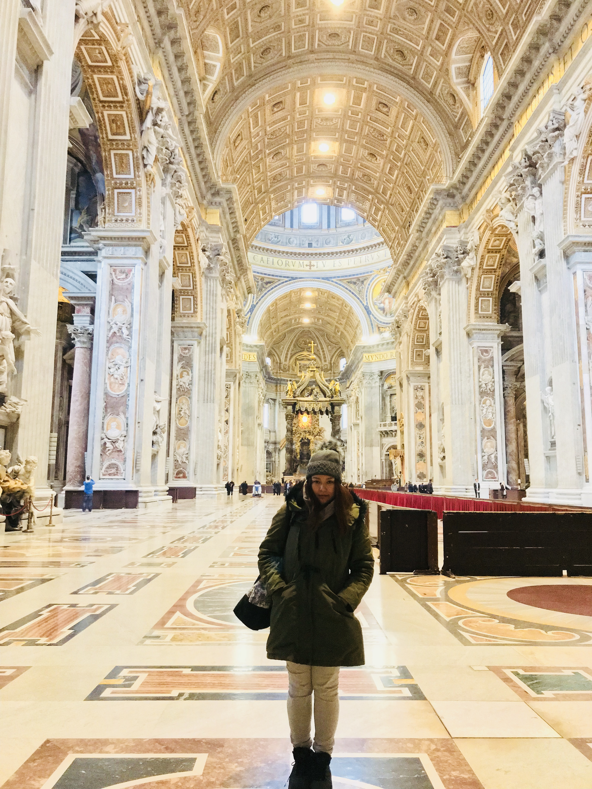
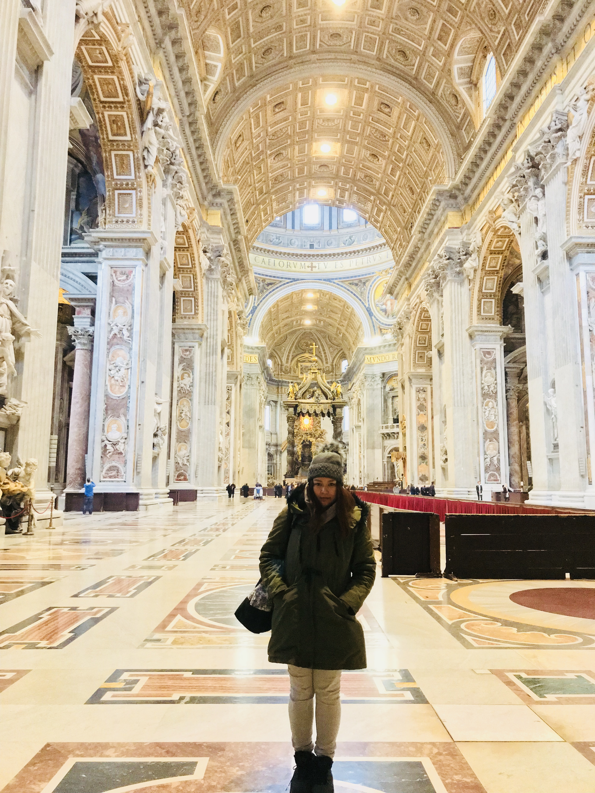

L’amore si trova tanto sotto la lana che sotto la seta.
I was here from January 10 - 12, 2018
Rome, the capital of Italy, is one of the most well-liked travel destinations worldwide.
It is a city with a fascinating past, beautiful architecture, and an active culture.
The Colosseum, a sizable amphitheater built in the first century AD, is one of Rome's most well-known landmarks.
It served as a venue for public performances including gladiatorial fights and is now a popular tourist destination.
The Pantheon, one of the best-preserved structures from ancient Rome, is a further prominent edifice.
It was initially constructed as a temple for all the gods and is now a church.
Rome is also the location of the Vatican City, which serves as the seat of the Roman Catholic Church. \
It is the smallest country in the world by both area and population, and it is a fully independent city-state.
Rome is renowned for its mouthwatering cuisine and fine wines, as well as for its exciting nightlife, in addition to its historical buildings.
Several museums and galleries are also located in the city, notably the Vatican Museums, which are home to some of the most well-known pieces of artwork in the entire world.
Ultimately, Rome is a city that provides both an interesting look into the past and access to contemporary conveniences and attractions.
Pizza, Pasta, Gelato
Saint Peter's Basilica
Trevi Fountain
Colosseum
Spanish Steps
Vatican City
SOLO European trip in 2018
Dead tired from walking all around the city
My love for this city goes here↓↓↓
 
